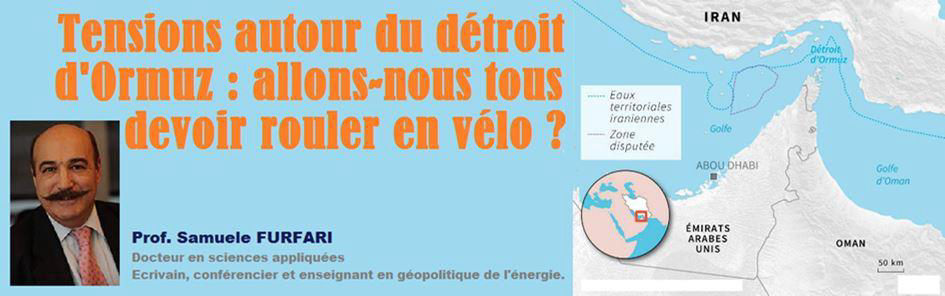

Tensions autour du détroit d’Ormuz : allons-nous tous devoir rouler en vélo ?
par Samuele FURFARI

Les tensions dans le détroit d’Ormuz1 ne devraient pas nous surprendre. En 2000, François Lamoureux, Directeur général à l’énergie de la Commission européenne, disait avec son sens de la formule : « Si le détroit d’Ormuz est bloqué, le lendemain le monde entier ira en vélo ». Même si c’était exagéré, cela avait un sens à l’époque. Aujourd’hui, c’est faux. À la suite des événements des dernières semaines, le prix du pétrole brut a un peu augmenté mais le monde n’a pas « été » en vélo.
Pour répliquer aux pressions imposées par le président des États-Unis, l’Iran aux abois a-t-il placé les bombes sur deux pétroliers qui naviguaient dans le golfe Persique ? Washington accuse, Téhéran dément. Depuis son retrait de l’accord nucléaire iranien du 14 juillet 20152, Donald Trump a exercé une pression de plus en plus forte sur l’Iran.
Téhéran est en difficulté, malgré sa menace du 8 mai 2019 d’accorder un délai de 60 jours aux autres signataires de l’accord pour maintenir leurs engagements (principalement permettre à l'Iran de pouvoir vendre son pétrole dans le monde). Cette initiative du président iranien Hassan Rohani a poussé l’UE dans les cordes, elle qui a pourtant bien tenté de contourner les sanctions de Washington en créant Instex, une entité censée servir au paiement des transactions entre les entreprises européennes et l'Iran, afin de se passer de l’incontournable dollar américain dans les transactions internationales.
Donald Trump possède une arme redoutable qui ancre sa détermination et assurera très probablement le succès de son initiative : l’abondance mondiale de pétrole et de gaz.
Instex, basé à Bercy, a été créé par la France, l’Allemagne et le Royaume-Uni, avec un capital social de 3 000 € (même s’ils annoncent atteindre le million « prochainement »). L’Iran doit lui aussi créer un équivalent censé permettre des échanges financiers. On ne voit pas bien comment Instex pourra soulager l’Iran et c’est peut-être ce qui explique la difficulté d’obtenir des informations sérieuses et transparentes sur ce nouveau véhicule financier.
Donald Trump possède une arme redoutable qui ancre sa détermination et assurera très probablement le succès de son initiative : l’abondance mondiale de pétrole et de gaz. Comment en est-on arrivé là, et surtout comment les Américains arrivent-ils à mettre une telle pression sur le régime iranien, vu leur dépendance passée au pétrole du Moyen-Orient ?
En 1979, la Révolution iranienne (la République islamique d’Iran vient de « célébrer » ses 40 ans) jette l’Occident dans un marasme total, avec l’aide d’autres producteurs de la région : le pétrole est utilisé comme une arme de rétorsion envers ceux qui soutiennent Israël3. Il fallait alors vite trouver ailleurs du pétrole, si indispensable à nos économies qui ne peuvent vivre sans transports (aujourd’hui encore, les transports dans l’Union européenne dépendent à 94% des produits pétroliers).
Au moment du second choc pétrolier, les produits pétroliers peuvent être substitués par le gaz naturel, le nucléaire ou le charbon pour la production d’électricité (l’hydroélectricité est alors déjà « en place » et ne résulte pas des chocs pétroliers) ; le gaz naturel faisant aussi l’affaire pour le chauffage. Mais il n’y a alors pas de solution pour le transport routier, aérien et maritime.
De 1974 à 1985, on a couru dans tous les sens pour trouver des solutions. En Europe, la Commission européenne finance des projets pour produire du pétrole et du gaz en mer du Nord.
Aux États-Unis, le Président Jimmy Carter lance un plan pour développer les énergies renouvelables qui vise à faire reposer 20 % de l’ensemble de l’énergie consommée dans le pays (pas seulement l’électricité donc) sur le solaire d’ici à l’an 2000. Observons que le solaire n’y représente aujourd’hui que 0,8% du total de cette consommation, ce qui démontre que les annonces dans le domaine de l’énergie ne sont pas nécessairement suivies de faits...
Grâce à la mise au point de nouvelles technologies de prospection et de production, on découvre du pétrole et aussi du gaz naturel dans des « nouvelles frontières », tant et si bien que les réserves prouvées de pétrole censées être épuisées en 2000 sont aujourd’hui de 50 ans. Le rapport « Golden Rules for a Golden Age of Gas »4 publié par l’Agence internationale de l’énergie envisage même en 2012 des réserves techniquement récupérables de gaz (en incluant les ressources non conventionnelles) pouvant dépasser 200 ans5.
On a assisté ces dix dernières années à l’émergence du pétrole et du gaz de schiste (qu'il convient de qualifier « de roche-mère »6) qui ont permis aux États-Unis de devenir le premier producteur de pétrole au monde.
Avec une augmentation de leur production de 16,6 % entre 2017 et 2018, et de 6,7 % par an en moyenne sur les dix dernières années, les États-Unis ont produit près de 15,3 millions de barils par jour (Mb/j) d'hydrocarbures liquides en 2018, dépassant de plus de 3 Mb/j le géant historique, l’Arabie saoudite (12,3 Mb/j en 2018).
Les États-Unis sont aussi devenus un exportateur majeur de gaz naturel. Depuis le début de 2019, 35 % du gaz de schiste américain - présenté par les écologistes comme une abomination environnementale - est livré dans l’UE, où il représente 13 % des importations européennes de gaz. La Commission européenne salue d'ailleurs sur son site la croissance de ces importations présentées comme le fruit de la visite de son président Jean-Claude Junker faite à Donald Trump en juillet 20187.
L’accord du 14 juillet 2015 est présenté comme un accord nucléaire mais, étrangement, il contient 65 fois le terme « pétrole ».
Le pétrole et le gaz de schiste américains ont ainsi bouleversé la donne géopolitique mondiale. Ils permettent à Washington cette stratégie car le monde peut désormais se passer des réserves de pétrole et de gaz de l’Iran (respectivement 9 % et 16 % des réserves mondiales prouvées). Inversement, l’Iran ne peut pas se permettre de ne pas vendre son pétrole.
L’accord du 14 juillet 2015 est présenté comme un accord nucléaire mais, étrangement, il contient 65 fois le terme « pétrole » : en fait le régime iranien voulait, en échange du ralentissement de son programme nucléaire, revenir en force sur le marché pétrolier mondial et ainsi contrarier dans le même temps l’Arabie saoudite, son adversaire régional et religieux. Sans les revenus du pétrole, (ne parlons pas du gaz, car, malgré leur énorme gisement de South Pars, les Iraniens ne possèdent pas la technologie pour le produire), le pays est menacé d’asphyxie. Il y a longtemps que ceux qu’on appelle les « faucons » le disent à Washington.
Avant la Révolution islamique de 1979, l’Iran produisait 8,3 % du pétrole mondial ; en 2018, cette part est tombée à 5 %. Alors que l’Iran du Shah vendait 5,6 Mb/j de pétrole, l’Iran de la République islamique a dû se contenter l’an dernier d'exportations de 2,8 Mb/j – la moitié ! Aujourd’hui, si le monde peut très bien se passer du pétrole iranien, le régime iranien, lui, aura beaucoup de mal à se maintenir. Les mollahs le savent : ils vont devoir apporter une réponse appropriée. Le monde ne roulera pas en vélo, quoi que fassent les chefs chiites.
Partager cette page